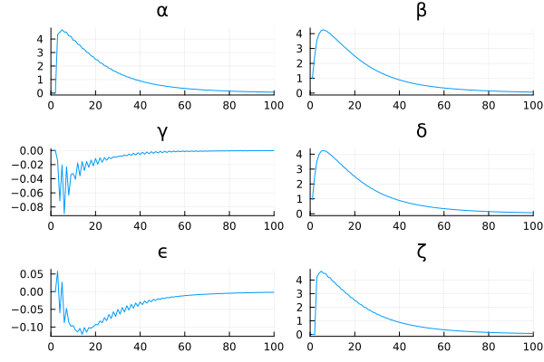
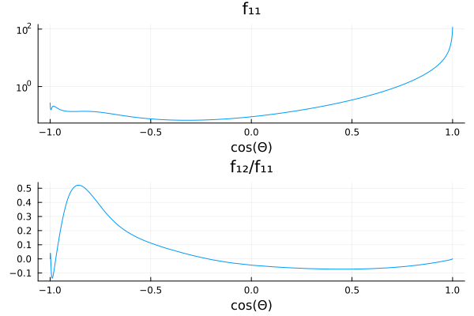
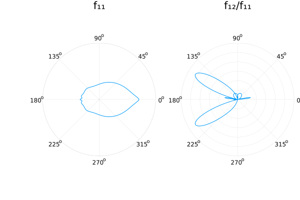
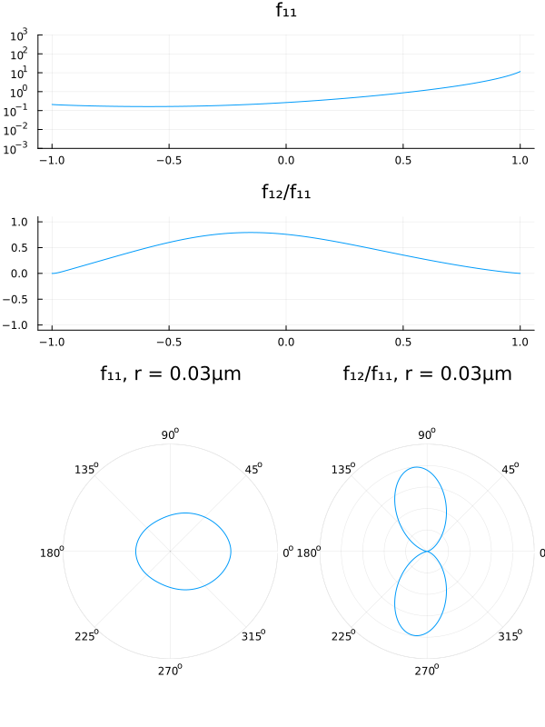

Scattering: Mie Phase Function Tutorial
Introduction
In the following tutorial, we will walk through how to compute phase function matrices from Mie theory.
Along the way, we will also calculate greek coefficients (which are essentially the legendre decomposition of the phase matrix components), which will be required for radiative transfer calculations.
Performing the phase function calculations
First let's use the required packages
using vSmartMOM.Scattering
using Distributions
using PlotsNow, we define the aerosol size distribution and properties. We only support univariate aerosols for now, but will add multivariate aerosols soon (we can use mixture models easily).
rₘ = 0.3; ## median radius [μm]
σ = 2.0; ## geometric stddev of radius
nᵣ = 1.3; ## Real part of refractive index
nᵢ = 0.0; ## Imag part of refractive index (sign changed, use only + here)
r_max = 30.0; ## Maximum radius [μm]
nquad_radius = 2500; ## Number of quadrature points for integrating of size dist.
# Create a Size Distribution (using Julia's Distributions package), note we have to take the natural log here
size_distribution = LogNormal(log(rₘ), log(σ));Create the aerosol with distribution and refractive index
aero = Aerosol(size_distribution, nᵣ, nᵢ)
------------------
Aerosol Struct
------------------
Size distribution: Distributions.LogNormal{Float64}(μ=-1.2039728043259361, σ=0.6931471805599453)
Real refractive Index nᵣ: 1.3
Imaginary refractive Index nᵣ: 0.0
Now, we define some scattering and truncation properties:
λ = 0.55; ## Incident wavelength [μm]
polarization_type = Stokes_IQUV(); ## Polarization type
# Trunction length for legendre terms
l_max = 20;
# Exclusion angle for forward peak (in fitting procedure) `[degrees]`
Δ_angle = 2;
# Truncation type
truncation_type = δBGE(l_max, Δ_angle);# Create a Mie model, using the Siewert method NAI2
model_NAI2 = make_mie_model(NAI2(), aero, λ, polarization_type, truncation_type, r_max, nquad_radius);# Compute aerosol optical properties:
aerosol_optics_NAI2 = compute_aerosol_optical_properties(model_NAI2);(nquad_radius, λ) = (2500, 0.55)
("Mie", FT, FT2) = ("Mie", Float64, Float64)
Computing PhaseFunctions Siewert NAI-2 style ... 0%| | ETA: 0:40:48
Computing PhaseFunctions Siewert NAI-2 style ... 100%|███| Time: 0:00:04Plotting the greek coefficients
(These are basically giving us the legendre decomposition of the phase matrix components)
using Parameters
@unpack α,β,γ,δ,ϵ,ζ = aerosol_optics_NAI2.greek_coefs;
p1 = plot(α, title="α");
p2 = plot(β, title="β");
p3 = plot(γ, title="γ");
p4 = plot(δ, title="δ");
p5 = plot(ϵ, title="ϵ");
p6 = plot(ζ, title="ζ");
plot(p1, p2, p3, p4, p5, p6, layout=(3, 2), legend=false)
xlims!(0,100)
Here, we can see the different greek coefficients that will be needed to compute the entire phase matrix at a given Fourier moment (see Sanghavi, Suniti. "Revisiting the Fourier expansion of Mie scattering matrices in generalized spherical functions." Journal of Quantitative Spectroscopy and Radiative Transfer 136 (2014) for details).
Reconstructing the Phase Functions from the greek coefficients
using FastGaussQuadrature
μ_quad, w_μ = gausslegendre(1000)
scattering_matrix = Scattering.reconstruct_phase(aerosol_optics_NAI2.greek_coefs, μ_quad);
@unpack f₁₁, f₁₂, f₂₂, f₃₃, f₃₄, f₄₄ = scattering_matrix f₁₁| 1000-element vector
f₁₂| 1000-element vector
f₂₂| 1000-element vector
f₃₃| 1000-element vector
f₃₄| 1000-element vector
f₄₄| 1000-element vectorPlot only phase function for I (f₁₁) and the I -> Q transition in the phase matrix (f₁₂) for the Stokes Vector [I,Q,U,V]
p1 = plot(μ_quad, f₁₁, yscale=:log10, title="f₁₁")
p2 = plot(μ_quad, f₁₂ ./ f₁₁, title="f₁₂/f₁₁")
plot(p1, p2, layout=(2, 1), legend=false)
xlabel!("cos(Θ)")
The top panel represents a more traditional phase function just for intensity, in this case high forward peaked (at μ=1). The lower panel shows the degree of linear polarization (f₁₂/f₁₁) associated with the scattering direction.
p1 = plot([acos.(μ_quad); -reverse(acos.(μ_quad))], log10.([f₁₁ ; reverse(f₁₁)]), proj=:polar, yscale=:log10, title="f₁₁", lims=(-3,4.2), yaxis=false)
p2 = plot([acos.(μ_quad); -reverse(acos.(μ_quad))], [abs.(f₁₂ ./ f₁₁) ; reverse(f₁₂ ./ f₁₁)], proj=:polar, title="f₁₂/f₁₁", lims=(0,0.6), yaxis=false)
plot(p1, p2, layout=(1, 2), legend=false)
xlabel!("Θ")
This figures shows the same as above but as polar plot with Θ=0 being the forward direction, Θ=180 the backward direction. The left panel is in log-scale while the right one show the degree of linear polarization (in absolute terms).
anim = @animate for r = 0.03:0.05:4.3
@show r
local size_distribution = LogNormal(log(r), log(σ))
# Create the aerosol
local aero = Aerosol(size_distribution, nᵣ, nᵢ)
local model_NAI2 = make_mie_model(NAI2(), aero, λ, polarization_type, truncation_type, r_max, nquad_radius)
local aerosol_optics_NAI2 = compute_aerosol_optical_properties(model_NAI2);
local scattering_matrix = Scattering.reconstruct_phase(aerosol_optics_NAI2.greek_coefs, μ_quad);
@unpack f₁₁, f₁₂, f₂₂, f₃₃, f₃₄, f₄₄ = scattering_matrix
# @show f₁₁[1]
p1 = plot(μ_quad, f₁₁, yscale=:log10, title="f₁₁", label="r(μm)=$r")
ylims!(1e-3, 1e3)
p2 = plot(μ_quad, f₁₂ ./ f₁₁, title="f₁₂/f₁₁", label="Q/I")
ylims!(-1.1, 1.1)
plot(p1, p2, layout=(2, 1))
p3 = plot([acos.(μ_quad); -reverse(acos.(μ_quad))], log10.([f₁₁ ; reverse(f₁₁)]), proj=:polar, yscale=:log10, title="f₁₁, r = $(r)μm", lims=(-3,4.2), yaxis=false)
p4 = plot([acos.(μ_quad); -reverse(acos.(μ_quad))], [f₁₂ ./ f₁₁ ; reverse(f₁₂ ./ f₁₁)], proj=:polar, title="f₁₂/f₁₁, r = $(r)μm", lims=(0,1.0), yaxis=false)
plot(plot(p1, p2, layout=(2,1), legend=false), plot(p3, p4, layout=(1,2), legend=false), layout=(2, 1), legend=false)
plot!(size=(600,800))
end
gif(anim, fps = 5)
This animation shows how the phase function and polarization properties vary with the mean radius of the aerosol distribution (width is fixed).
This page was generated using Literate.jl.